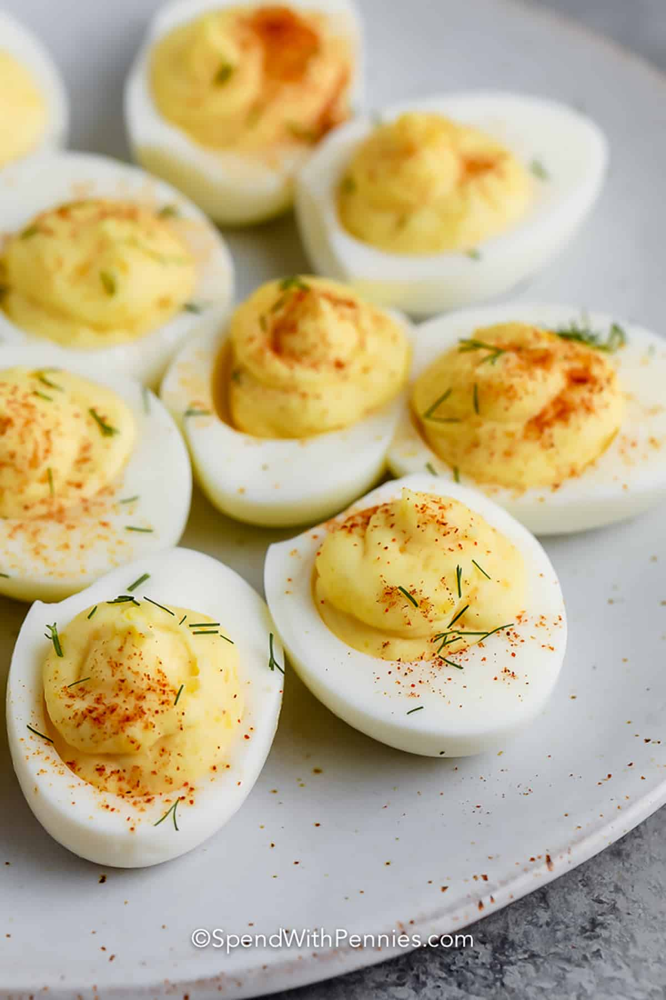

Deviled Eggs

Deviled Eggs Directions
This recipe can be for a quick snack or for a party gathering
Things you will need
- Eggs
- Sweet pickles
- Your favorite brand of mayo
- Smoked paprika
- A pot
- Water
Steps to delciousness
- Place your into the pot
- Fill pot till the water is just above the top of the eggs
- Place the pot on the stove and turn it to "Hi"
- Let the eggs boil till there is just little water left in the pot
- Take pot of stove and put eggs on ice
- Deshell eggs
- Cut eggs vertically and scoop out the yolk careflly and place into a bowl
- Grab your mayo, smoked paprika, and sweet pickles
- Add each ingredient to taste and texture. Use the juice of the sweet pickles (you can cut up and add the sweet pickles if you'd like)
- Once it's to your taste, add them back into the egg whites
- Sprinkle smoked paprika on top
- Place in the fridge till chilled and enjoy!